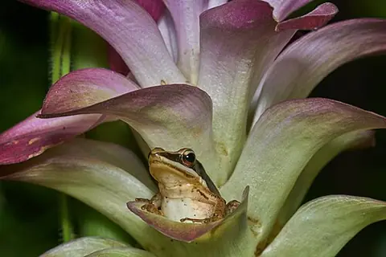

Drinks & juices · Popular in Central forests
Tikhur cooler
Tikhur cooler is made with wild tikhur, a favourite in Central forests.

How do you make tikhur cooler?
Stir a spoon of tikhur starch into cold water or milk with sugar. A traditional summer cooler in Chhattisgarh.
Wild ingredients
- Tikhur (Curcuma angustifolia): in season December to February
Watch the recipe

Video: Ye Humara Kitchen on YouTube